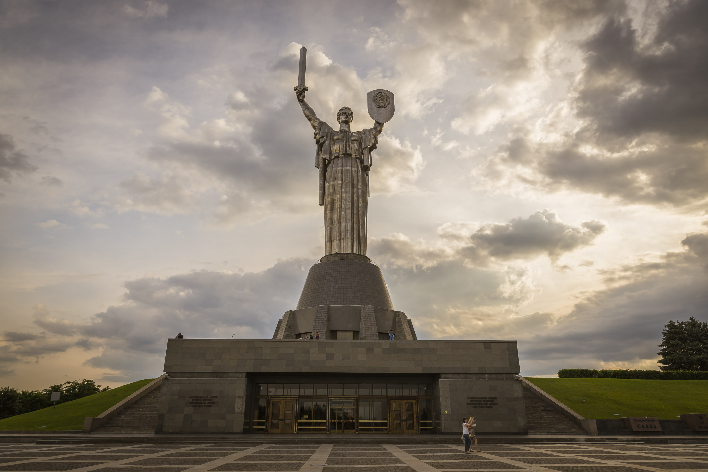
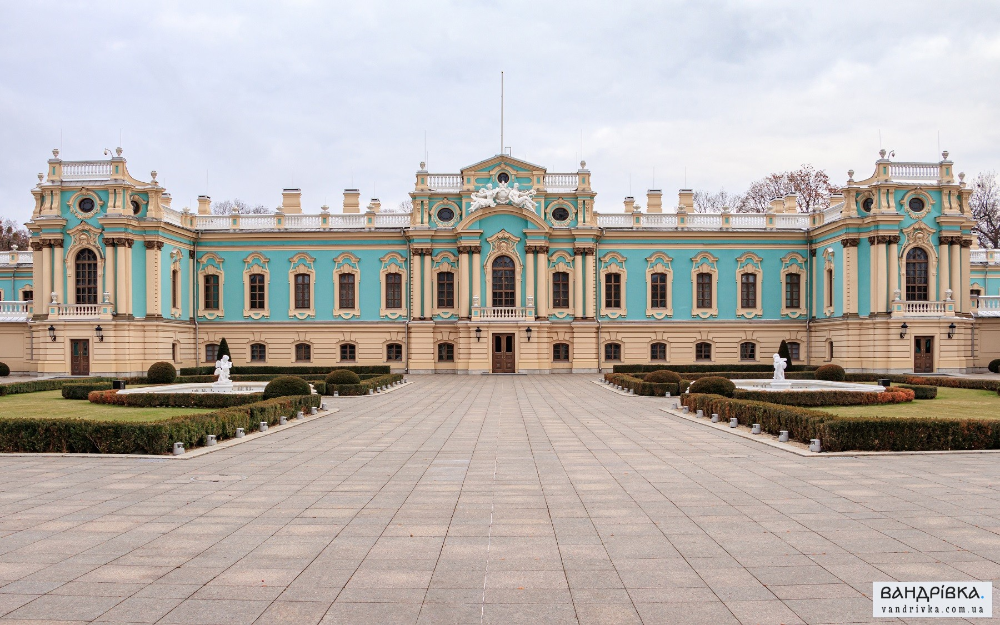

Київ
Список пам’яток столиці України
1.Києво-Печерська Лавра
Київський православний монастирський комплекс. Один із найбільших християнських центрів України, визначна пам'ятка історії та архітектури. Києво-Печерська лавра належить державі, а релігійні організації користуються нею на правах оренди. 1994 року (в списку об’єктів значиться 1990 рік) разом із Софіївським Собором внесений до переліку Світової спадщини ЮНЕСКО.

2.Золоті ворота

Головна брама стародавнього Києва, пам'ятка оборонної архітектури Київської Русі, одна з найдавніших датованих споруд Східної Європи, символ Києва. Свою назву одержали за аналогією із Золотими Воротами в Константинополі (Царгороді). Історик Микола Закревський назвав Золоті ворота: «дорогоцінним залишком давньої величі й слави Києва»
3.Батьківщина-Мати
Монументальна скульптура в Києві. Розташована на високому правому березі річки Дніпро, на території Національного музею історії України у Другій світовій війні. Відкрита у 1918 році. Є найвищою монументальною скульптурою в Європі.
- 
4.Маріїнський палац
- 
Oфіційна церемоніальна резиденція президента України. Зведений у 1750–1755 роках за зразком палацу, який проєктував Вартоломей Растреллі для Олексія Розумовського, фаворита та фактичного чоловіка імператриці Єлизавети Петрівни. Під час відвідування Києва 1744 року Єлизавета сама обрала для нього місце. Назва «Маріїнський» закріпилася за палацом з 1950-х років, від Маріїнського парку навпроти, до цього палац мав назву Царський.